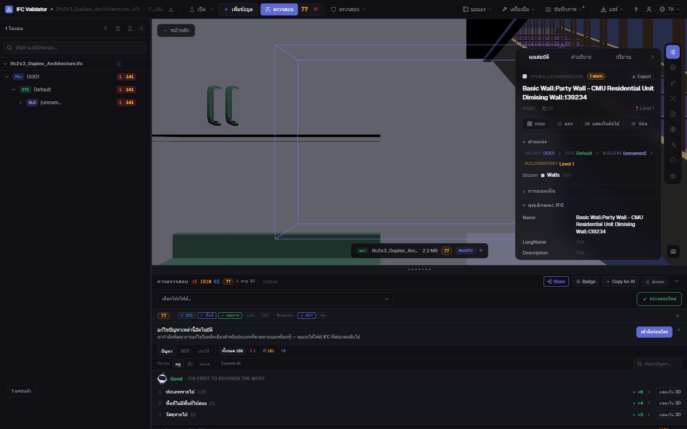
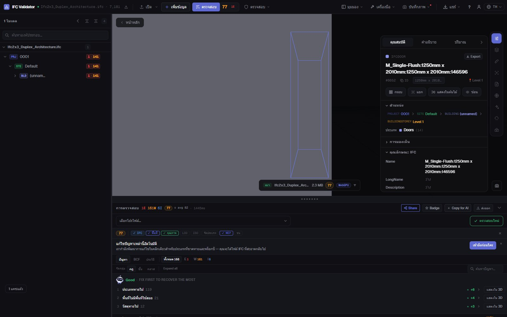

โปรแกรมแก้ไข IFC ฟรี
ออนไลน์ในเบราว์เซอร์
เปิดไฟล์ IFC เลือกองค์ประกอบใดก็ได้แล้วแก้สิ่งที่ผิด: ชื่อ LongName ค่าคุณสมบัติ หรือชั้นที่อยู่ ทุกการเปลี่ยนแปลงย้อนกลับได้ และผลลัพธ์ส่งออกเป็น IFC มาตรฐานที่โปรแกรม BIM ของคุณเปิดได้ ไฟล์ไม่ออกจากคอมพิวเตอร์ของคุณ
แก้ไขไฟล์ IFC — ฟรี →ไม่ต้องมีบัญชี · ไม่อัปโหลด · ทำงานในเบราว์เซอร์ · ฟรี

สิ่งที่ทำได้
แก้ไข IFC ได้โดยไม่ต้องมี Revit, ArchiCAD หรือไลเซนส์
สำหรับการแก้ไขที่ปกติต้องส่งกลับไปให้ผู้สร้างโมเดล: เร็ว ย้อนกลับได้ และบันทึกเป็น IFC จริง
เปลี่ยนชื่อองค์ประกอบ
เปลี่ยน Name และ LongName ขององค์ประกอบใดก็ได้ หรือเปลี่ยนชื่อที่ซ้ำหรือว่างทั้งหมดพร้อมกันด้วยรูปแบบ ({class}, {storey}, {n})
แก้ค่าคุณสมบัติ
เปลี่ยนค่าของคุณสมบัติที่มีอยู่แล้วในชุดคุณสมบัติขององค์ประกอบ (Pset_WallCommon, Pset ที่กำหนดเอง…)
แก้ GUID
สร้าง GlobalId ที่ซ้ำหรือผิดรูปแบบใหม่ด้วยคลิกเดียว — ข้อผิดพลาดในการส่งออกที่พบบ่อยที่สุด
ย้ายชั้น
กำหนดองค์ประกอบให้อยู่ในคอนเทนเนอร์เชิงพื้นที่อื่นเมื่อถูกส่งออกผิดชั้น
ย้อนกลับได้ทั้งหมด
ทุกการเปลี่ยนแปลงเป็นคำสั่งที่ย้อนกลับและทำซ้ำได้ ไฟล์ต้นฉบับไม่ถูกแก้จนกว่าจะส่งออก
ส่งออก IFC หรือ GLB
ดาวน์โหลดโมเดลที่แก้ไขเป็น IFC (สคีมาเดียวกับต้นฉบับ) หรือ GLB สำหรับเว็บและ AR
ภาพหน้าจอ

คำถามที่พบบ่อย
คำถามที่พบบ่อย
มีโปรแกรมแก้ไข IFC ออนไลน์ฟรีไหม?
มี IFC Viewer Online ใช้ได้ฟรีทุกกรณีรวมถึงงานเชิงพาณิชย์ เปิดหน้าเว็บ ลากไฟล์ .ifc มาวางแล้วแก้ไขในเบราว์เซอร์ ไม่ต้องติดตั้ง ไม่ต้องมีบัญชี และไม่อัปโหลด เพราะไฟล์ถูกอ่านในเครื่องด้วย WebAssembly
แก้อะไรในไฟล์ IFC ได้บ้าง?
ชื่อองค์ประกอบ (Name, LongName) ค่าของคุณสมบัติที่มีอยู่ GlobalId และคอนเทนเนอร์เชิงพื้นที่ขององค์ประกอบ และเปลี่ยนชื่อหลายองค์ประกอบพร้อมกันได้ ไม่ใช่เครื่องมือสร้างโมเดล จึงไม่แก้รูปทรงเรขาคณิต
IFC ที่แก้แล้วเปิดใน Revit, ArchiCAD หรือ Solibri ได้ไหม?
ได้ การส่งออกจะเขียน IFC มาตรฐานตามสคีมาของไฟล์ที่เปิด (IFC2x3, IFC4, IFC4x3) พร้อมการแก้ไขของคุณ โปรแกรมที่อ่านต้นฉบับได้ก็อ่านไฟล์นี้ได้
โมเดลของฉันถูกอัปโหลดไปที่ไหนไหม?
ไม่ การอ่าน แก้ไข และส่งออกเกิดขึ้นในเบราว์เซอร์ทั้งหมด ตรวจสอบได้ใน DevTools ว่าไม่มีคำขอใดส่งไฟล์ ใช้กับโครงการภายใต้ NDA ได้ และทำงานออฟไลน์ได้หลังโหลดแล้ว
ตรวจสอบโมเดลหลังแก้ไขได้ไหม?
ได้ แอปเดียวกันตรวจไฟล์ด้วยกฎคุณภาพ 44 ข้อและให้ Health Score 0–100 จึงเห็นคะแนนเพิ่มขึ้นหลังแก้ไข
แก้ IFC ด้วยตัวเองในหนึ่งนาที ไม่ต้องส่งกลับไปมา
เปลี่ยนชื่อ · แก้คุณสมบัติ · แก้ GUID · ย้อนกลับ · ส่งออก IFC
แก้ไขไฟล์ IFC — ฟรี →